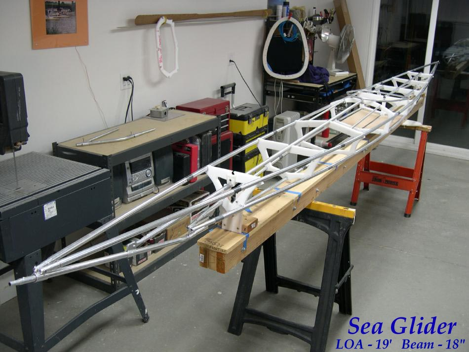

| Sea Glider | Menu Previous Page Next Page |
|

The Sea Glider is the longest 19ft (580cm) and narrowest 18in (45.7cm) kayak in the manual. It is designed for exercise and rolling. This kayak incorporates new construction features that are outlined on the following pages. All changes listed below can be incorporated into any of the designs in the manual. A major change is the use of 6 tube sections per stringer allowing the kayak to have a folded size of only 45 inches. A Golf Hard bag can now be used for transporting the kayak by air. Offsets will be included when on water testing is completed.
Frame Changes Include:
1. 6 tube sections per stringer for 45in folded frame length |
|